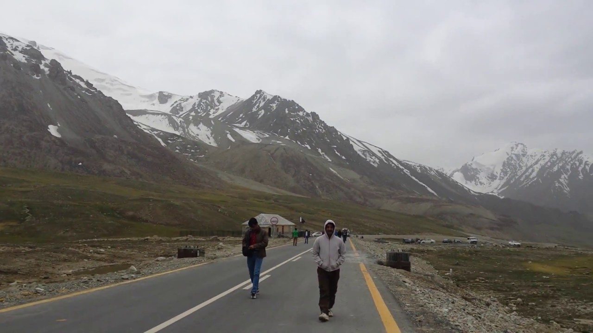
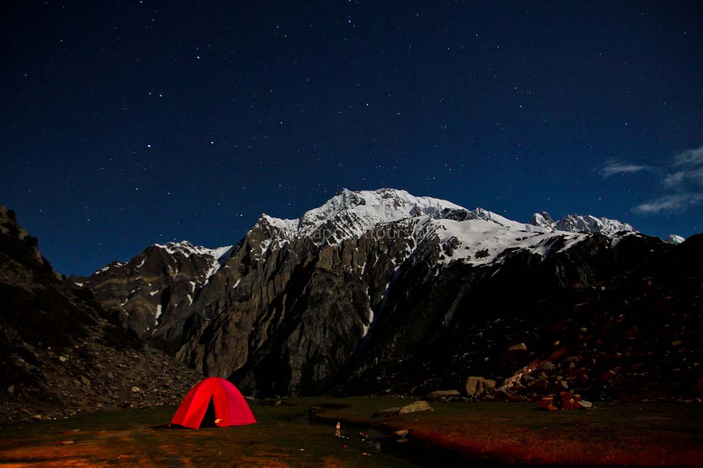

15 Most Beautiful Places in Pakistan – From Mountains to Mosques
It’s hard to imagine a more magnificent landscape than the rugged peaks, hidden villages and wind-swept plains of Pakistan. Here are of the most beautiful places in Pakistan, from wild mountain passes and unreal lakes, to ornate mosques and ancient fortresses.
15 most beautiful places in Pakistan
Without further ado, here are the 15 most beautiful places in Pakistan (in no particular order), a country that quickly and fiercely stole my heart.
khyber pakhtunkhwa

SWAT VALLEY

Though it has had a rough past, the present and future of Swat Valley are shining very bright. This stunning valley in the Khyber Pakhtunkhwa province of Pakistan is something straight out of a fairy tale. Think bright green fields and forests, picturesque villages, and rivers boasting shades of blue so clear and bright you wouldn’t have thought them real! The true beauty of Swat can be found around the town of Kalam, which serves as a base to the explore the beauty of the valley. Here are 3 places you can’t miss in Swat Valley
Boyun Village

Boyun, also known as Green Top, is a short drive or manageable up-hill walk from Kalam town. When you finally reached the pinnacle, you’ll be rewarded with a panorama of one of the most vast and beautiful villages I’ve ever seen – along with sweeping views of the valley below. Boyun is an easy day trip from Kalam.
HUNZA VALLEY

If you live in Pakistan – or have read anything about the country – it’s almost certain you’ve come across the name Hunza. Don’t let the word ‘valley’ confuse you, though – Hunza is actually a massive district made up of numerous valleys and villages. One part of the ancient Silk Road, here are some of the most beautiful sights in Hunza
Passu Cones
The Passu Cathedral is a natural work of art and one of the most recognisable scenes in Pakistan. Though staying overnight in Passu village is no longer allowed, the cones are visible from a ways away, starting from the village of Gulmit. The most iconic view of the Cathedral is from the Karakoram Highway, about an hour’s drive from Gilgit City.

Attabad Lake
A lake that doesn’t look real… Even when you’re standing right in front of it. Attabad was born out of tragedy when a massive landslide occurred in 2010. The flow of the Hunza River was blocked, and the now-famous lake was created in its wake. Its bright-blue turquoise waters make the it one of the most beautiful places in Pakistan.

Eagle’s Nest
Want to see one of the most epic sunsets in the Hunza Valley? Head to Eagle’s Nest around golden hour! The name comes from an upscale hotel/restaurant nearby, but you can drive up to the viewpoint without going there.
YARKHUN VALLEY

Though it’s relatively unheard of and forgotten compared to Pakistan’s most famous tourist spots, I think Yarkhun Valley was the most beautiful place I visited in the country. Located in the Upper Chitral district of Khyber Pakhtunkhwa, Yarkhun dazzles with its mountain ranges and untouched villages.
Reaching the valley, which stretches for many kilometres past the administrative town of Mastuj, requires a bit of effort if you don’t have your own vehicle. If you do have one though, the ride isn’t too bad – just prepare for mostly dirt roads!
The side valley of Gazin is most definitely worth a detour if you make it all the way to Yarkhun. Here, you can see the mountains of the Thoi Pass, a high-altitude pass that connects Upper Chitral with Yasin Valley in Gilgit Baltistan.
PHANDER LAKE

Phander Lake, located in Phander Village, is almost too good to be true. The teal-coloured lake sits silently amongst light-green trees befitting a landscape painting.
Despite being insanely beautiful, Phander Lake doesn’t see anywhere as close to the number of tourists as the more popular Attabad Lake does.

During the 4 days I spent in Phander relaxing lakeside, I didn’t encounter any other tourists. If you do visit, I highly recommend you stay at the Lake Inn, which is a short walk away and charges 1,000 rupees per night.
There is also the expensive (5,000 rupees) PTDC that overlooks the lake, but the hospitality and value at Lake Inn reign superior.

BROGHIL VALLEY
Located way up north very close to Afghanistan’s Wakhan Corridor, Broghil Valley was formerly only accessible via trek or horseback. These days, the once-hidden locale can be reached by a treacherous jeep track – yet it still only receives a handful of visitors during the few months it’s not frozen under heaps of snow. Currently, whether or not foreigners are allowed to visit Broghil is iffy. (If you’re insistent, make sure you check with the Deputy Commissioner’s Office in Chitral before making the trek up there.) But Pakistanis – please go see this beauty! The valley is home to numerous high-altitude lakes, yaks, and sprawling green pastures, all set against a dramatic mountainous backdrop that soars above 13,000 feet. Moreover, a day’s trek from Lashkargaz, the last village in Broghil, will lead you to Karambar Lake, one of the highest in the world!
Lahore

A city… Say what? Yes, Lahore may be a metro but its treasure trove of historical places surely makes it one of the most beautiful places to visit in Pakistan. Lahore was the city of Mughals, and so much of their creations still remain.
The most famous of the city’s monuments include the Badshahi Mosque, the Wazir Khan Mosque, and of course the Lahore Fort. Add to that dozens upon dozens of beautifully preserved tombs, lively shrines, and havelis upon havelis, and you have yourself the cultural capital of Pakistan.
SHAH JAHAN MOSQUE

Thought all the Mughal relics were in Punjab? Think again! The Shah Jahan Mosque – also known as the Jamia Masjid – is located in Thatta, a town in Pakistan’s Sindh province. It’s widely known for having the most elaborate display of tile work in all of South Asia. Blue and sandstone colours adorn the interior of the mosque and are sure to wow all who visit.
The mosque was commissioned by Shah Jahan when he sought refuge in Thatta back in 1647 and somehow remains in amazing shape today. Though Sindh might seem to be a far cry from the mountains, the immaculate artistry present here makes it one of the most beautiful tourist places in Pakistan.
KHUNJERAB PASS
This high-mountain pass isn’t for the faint of heart. At nearly 4,600 metres (15,397 feet), this popular tourist attraction connects Pakistan with China to form the highest paved border crossing in the world.
Many people venture to the border to take photos at the official gate, which is surrounded by insanely tall peaks and grassy fields. As for transport, it’s best to travel here with your own vehicle as bus tickets can get pricey. For adventurous travellers, hitchhiking is also an option, as it is on much of the Karakoram Highway.
For all those trekking enthusiasts out there – this one’s for you! The Rakaposhi Base Camp Trek is doable in one day, even for beginners, and offers some truly insane views of Rakaposhi, a 7,800-metre peak!
There are few ways to get as up close and personal with Pakistan’s giants than this. The trek starts from the village of Minapin, where it should take those with a decent fitness level about 4 to 5 hours to reach the top.
RAKAPOSHI BASE CAMP
For all those trekking enthusiasts out there – this one’s for you! The Rakaposhi Base Camp Trek is doable in one day, even for beginners, and offers some truly insane views of Rakaposhi, a 7,800-metre peak!
There are few ways to get as up close and personal with Pakistan’s giants than this. The trek starts from the village of Minapin, where it should take those with a decent fitness level about 4 to 5 hours to reach the top.
Islamabad

Serving as the capital of Pakistan since the Sixties, Islamabad was built according to a carefully organized plan, divided into sectors along a grid of clean, tree-lined streets. The city is sheltered by the Margalla Hills, the foothills of the Himalayas and the home of rare species of leopard, deer, birds, and even porcupines. Several hiking paths end at Daman-e-Koh, a picnic spot with a splendid view of the entire city, including the massive modernist Faisal Mosque and even the Rawal Dam.
Gilgit Baltistan

Gilgit-Baltistan (formerly known as the Federally Administered Northern Areas or FANA ) is the northernmost political entity within Pakistan. According to Pakistan's constitution, Gilgit-Baltistan is a self governing region under Pakistan. Gilgit-Baltistan is home to some of the world's highest mountains, including five of the eight-thousanders. The main focus of attention for many travelers is the world's three highest mountain ranges--the Karakoram, the Himalaya, and the Hindu Kush, with five peaks over 8,000 meters and many peaks over 7,000 meters, and having the largest glaciers in the world (other than those in the polar region). Wild rivers and unique landscapes make this area a "mountain paradise" for mountaineers, trekkers, and tourists.